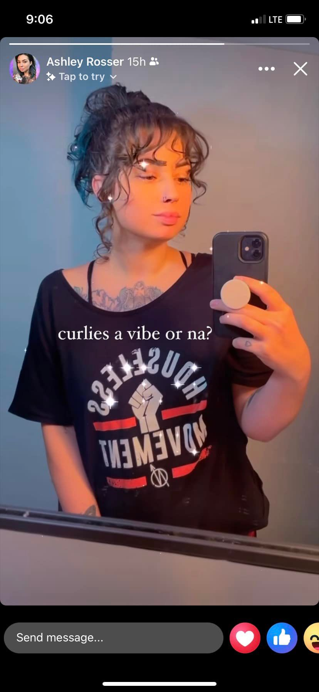

Mobile uploads
Do you know Ashley Rosser from Harm Reduction Ohio?
She is doing the most innovative work in northeast Ohio in the area of harm reduction.
She pushes really hard on getting Narcan into the community and has done that for years. No one needs to EVER die from a fentanyl overdose. But they do all the time because no one was around to give them Narcan. Narcan is a Lazarus drug. It will raise you from the dead. I’ve seen it with my own eyes.
Now she is doing some really cutting edge work in meth smoking supplies.
Where this is all naturally heading is supplying clean drugs to the community. The Vancouver group, Drug User Liberation Front (DULF) — a collective of advocacy groups working to ensure a safe supply of drugs — is already doing this work.
Also having safe injection sites is an obvious next step.
You only have to have an elementary understanding of addiction to know how people quit drugs. You quit when you are ready to quit and not a moment before. No amount of scorn or shame or threat of jail or near death experiences or freezing cold nights on the street will convince you otherwise. Ask any addict what those negative reinforcements do to you and they’ll tell you the same thing: They just make you do more drugs, not less.
You just have to stay alive long enough to get to that point.
And personally I’m getting to the point where this world is becoming so terrible to live in and our leaders care so little about us… if you never stopped doing drugs I wouldn’t blame you. All anyone cares about is funneling as much money as possible into the military industrial complex, and the pharmaceutical industry. Those are the only people that matter in the world today. So do what you want. I get it.
Ashley is an amazing human. We are very lucky to have her in our community. And she happens to be wearing a shirt in this picture from my group. I should have some pretty interesting news from the Houseless Movement in the next couple weeks.